Costa Blanca · Finestrat
Inmuebles en venta en Finestrat
Pisos nuevos y villas con vistas a la bahía de Benidorm, en las colinas justo detrás de la costa. Estos son los inmuebles que vendemos hoy en Finestrat, con una breve guía de las zonas y lo que cuesta de verdad comprar.
- 44inmuebles en venta en Finestrat
- desde 289.000 €un piso nuevo
- unos 10 mina las playas de Benidorm
- unos 45 minal aeropuerto de Alicante-Elche
En venta ahora
Inmuebles en venta en Finestrat
Pisos nuevos de 1 a 3 dormitorios con piscina comunitaria, adosados, y villas con piscina privada y vistas al mar. La mayoría están en residenciales cerrados modernos. Los precios son los de hoy; pregúntenos por la disponibilidad actual.
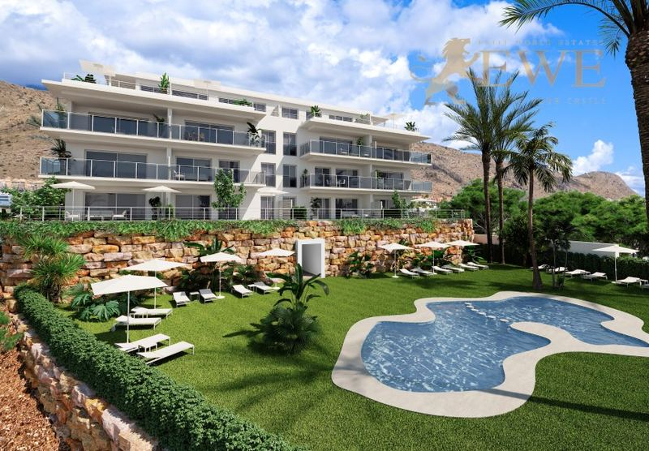
Entrega T1 2028Finestrat
New flats in Sierra Cortina Resort, Finestrat
289.000 €
1 dormitorio · 1 baño · 45 m²Ref. EWE3635

Finestrat
New exclusive apartments in Finestrat
312.900 €
2 dormitorios · 2 baños · 66 m²Ref. EWE3479
 Entrega abr 2028
Entrega abr 2028Finestrat
Elegant flats with sea views in Finestrat
352.900 €
2 dormitorios · 2 baños · 70 m²Ref. EWE3317
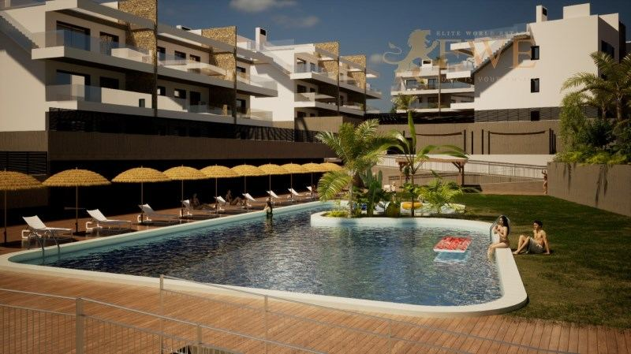
Finestrat
Fully equipped apartment in Finestrat
360.000 €
2 dormitorios · 2 baños · 70 m²Ref. EWE2155
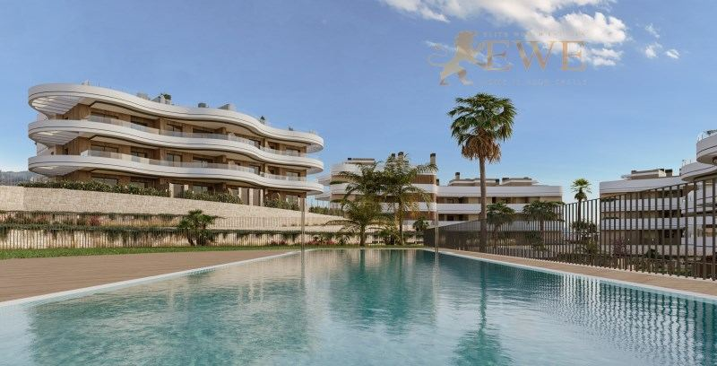
Entrega desde T4 2028Finestrat
Sea-view apartments in Balcón de Finestrat
364.000 €
2 dormitorios · 2 baños · 66 m²Ref. EWE3738
 Entrega fin 2028
Entrega fin 2028Finestrat
New apartment with a large terrace and sea views in Finestrat
375.000 €
2 dormitorios · 2 baños · 68 m²Ref. EWE3766
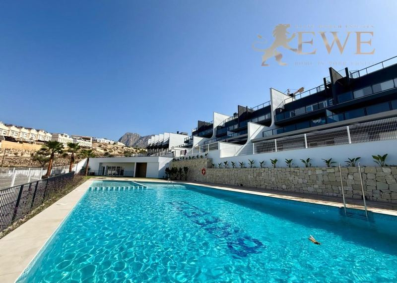
Finestrat
Luxury penthouse with panoramic views in Finestrat
399.000 €
2 dormitorios · 2 baños · 62.5 m²Ref. EWE3775
 Entrega T1 2028
Entrega T1 2028Finestrat
New flats in Sierra Cortina Resort, Finestrat
409.000 €
2 dormitorios · 2 baños · 65 m²Ref. EWE3873
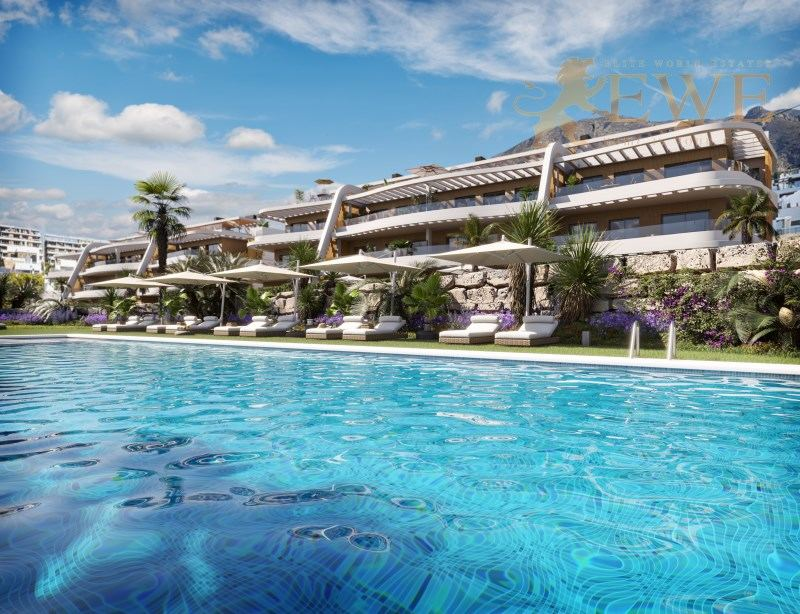
Entrega inicio 2027Finestrat
Elegant apartment with large terrace in Finestrat
410.000 €
2 dormitorios · 2 baños · 100 m²Ref. EWE3411
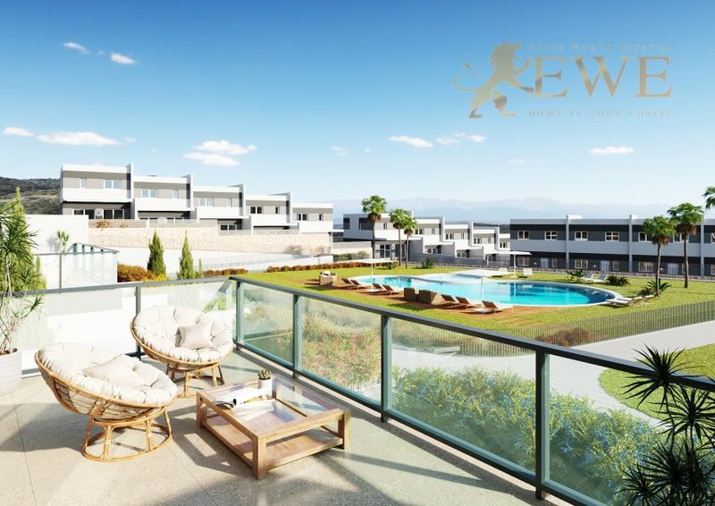
Finestrat
New terraced house development in picturesque Finestrat
425.000 €
3 dormitorios · 3 baños · 99 m²Ref. EWE3639

Finestrat
Amazing apartments with sea views in Finestart
440.000 €
2 dormitorios · 2 baños · 111 m²Ref. EWE1891

Finestrat
New project of sea view apartments in Finestrat
440.000 €
2 dormitorios · 2 baños · 76 m²Ref. EWE3628
 Entrega fin 2028
Entrega fin 2028Finestrat
Spacious Apartment with Sea Views in Finestrat
452.000 €
3 dormitorios · 2 baños · 88 m²Ref. EWE3767

Finestrat
Prestigious gated community of private homes in Finestrat
495.000 €
3 dormitorios · 2 baños · 107 m²Ref. EWE2131
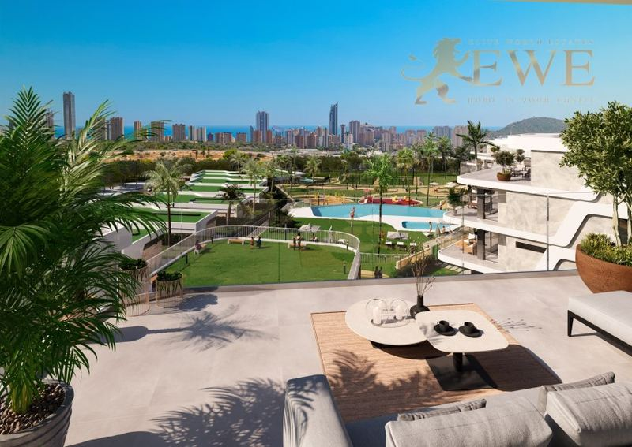
Finestrat
Spacious apartment with sea views in Finestrat
495.000 €
3 dormitorios · 2 baños · 89 m²Ref. EWE3629

Finestrat
Modern terraced houses in Finestrat
525.000 €
3 dormitorios · 3 baños · 106 m²Ref. EWE3730

Finestrat
Excellent, ready-to-move-in flat with sea views in Finestrat
550.000 €
3 dormitorios · 3 baños · 208 m²Ref. EWE3619
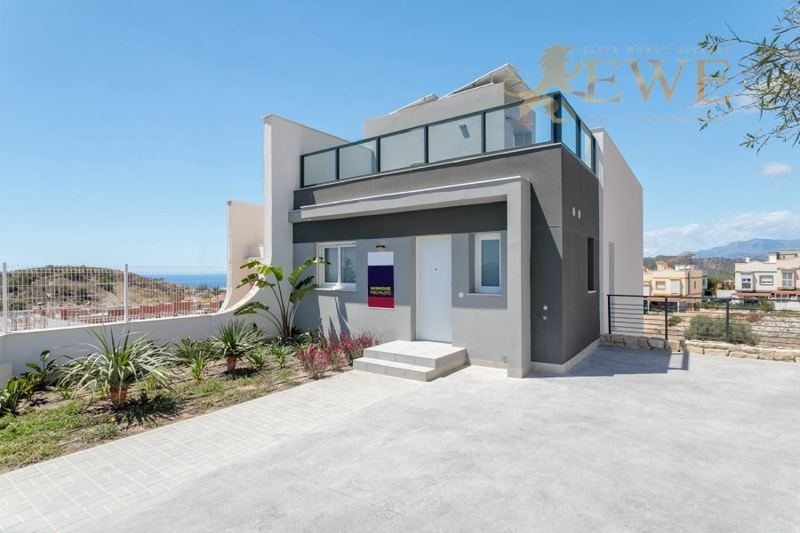
Finestrat
New, ready-to-move-in semi-detached villa with sea views in Finestrat
555.000 €
4 dormitorios · 3 baños · 167 m²Ref. EWE2165

Finestrat
Modern villa with sea views in Finestrat
555.000 €
4 dormitorios · 3 baños · 198 m²Ref. EWE3283

Finestrat
New semi-detached villa in Finestrat
578.500 €
3 dormitorios · 4 baños · 125 m²Ref. EWE3449
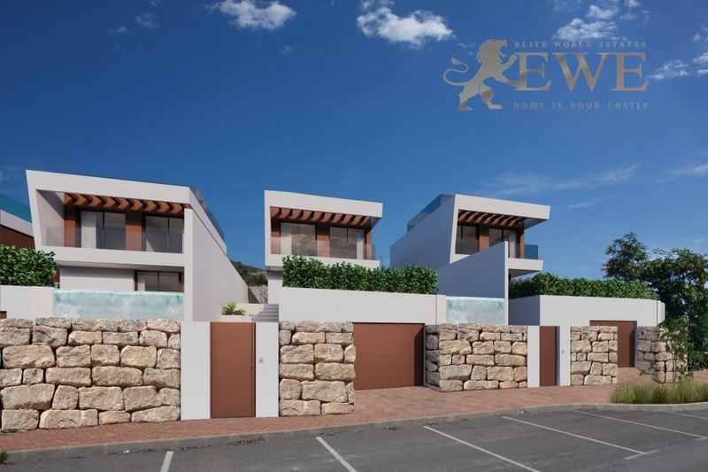
Finestrat
Elegant villa overlooking the golf course in Finestrat
605.000 €
3 dormitorios · 4 baños · 141.5 m²Ref. EWE3295

Finestrat
New Residential Complex with Sea views in Finestrat
610.000 €
3 dormitorios · 2 baños · 195.66 m²Ref. EWE1892
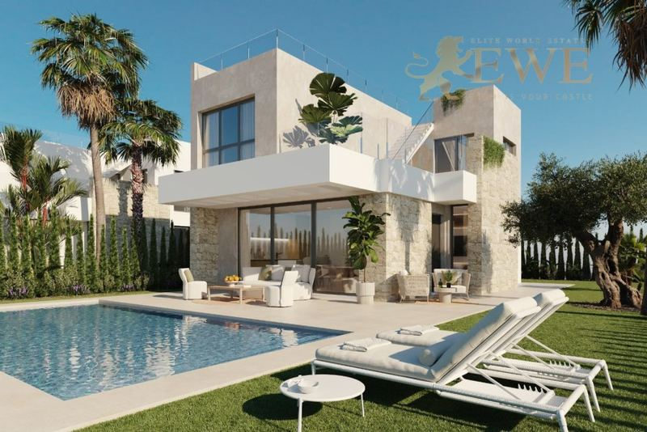
Finestrat
Superb villa with pool in picturesque Finestrat
610.000 €
3 dormitorios · 4 baños · 140 m²Ref. EWE3633
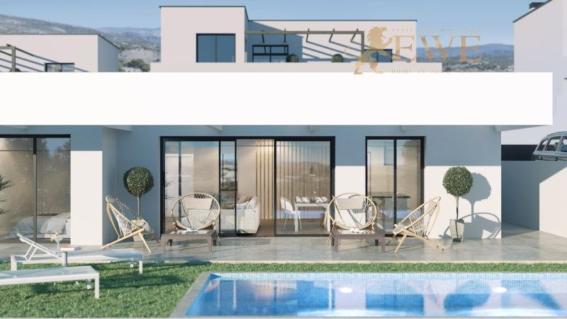
Finestrat
Excellent villa with sea views in Finestrat
630.000 €
3 dormitorios · 3 baños · 340 m²Ref. EWE3357
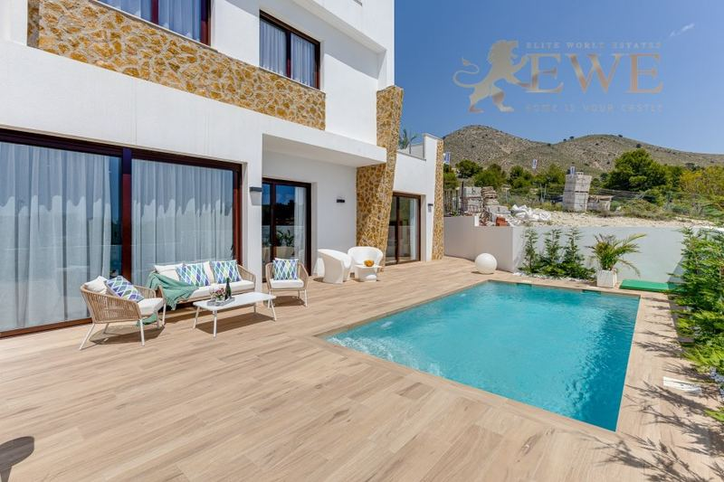
Finestrat
A wonderful villa overlooking the mountains in Finestrat
635.000 €
3 dormitorios · 2 baños · 107 m²Ref. EWE1419
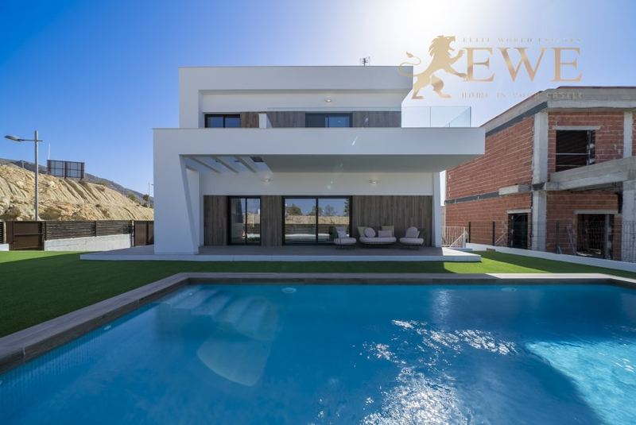
Finestrat
Exclusive villa in a prestigious location in Finestrat
650.000 €
3 dormitorios · 3 baños · 167 m²Ref. EWE2348
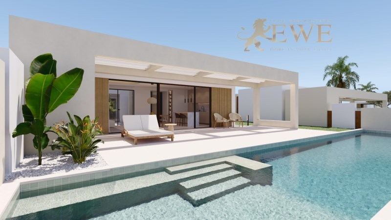
Finestrat
Boutique Villas with Pool and Mountain Views in Finestrat
650.000 €
3 dormitorios · 3 baños · 145 m²Ref. EWE3762
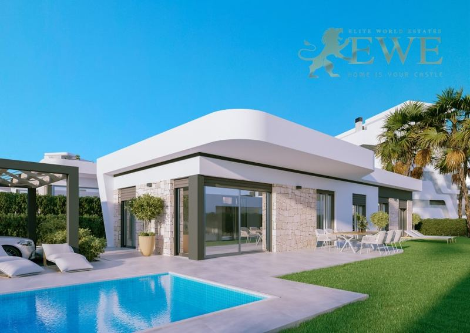
Finestrat
New private villa development in Sierra Cortina, Finestrat
690.000 €
3 dormitorios · 2 baños · 120 m²Ref. EWE3630
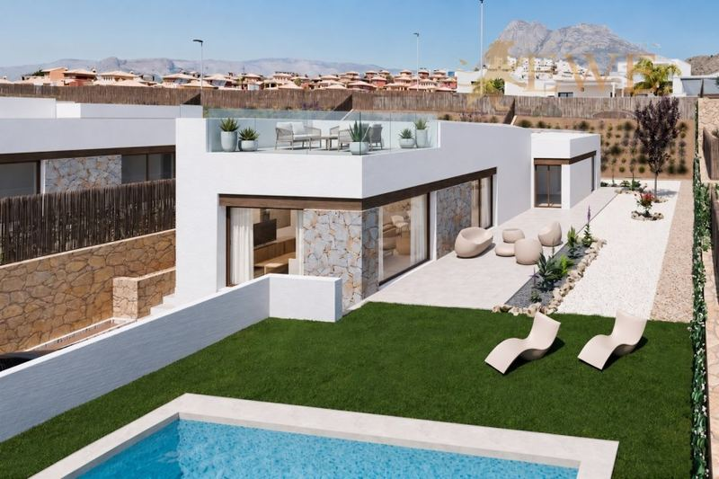
Entrega desde fin 2026Finestrat
Modern Villa with Private Pool and Rooftop Solarium in Finestrat
690.950 €
3 dormitorios · 2 baños · 115 m²Ref. EWE3735
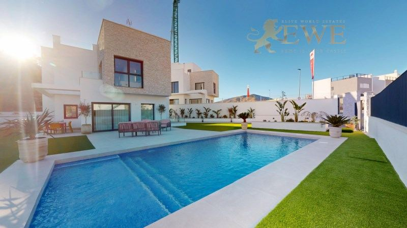
Finestrat
Luxury villa with sea views in Balcón de Finestrat
699.900 €
3 dormitorios · 3 baños · 330 m²Ref. EWE3410

Finestrat
Stunning villa with sea view in Finestrat
725.000 €
3 dormitorios · 3 baños · 125 m²Ref. EWE3412
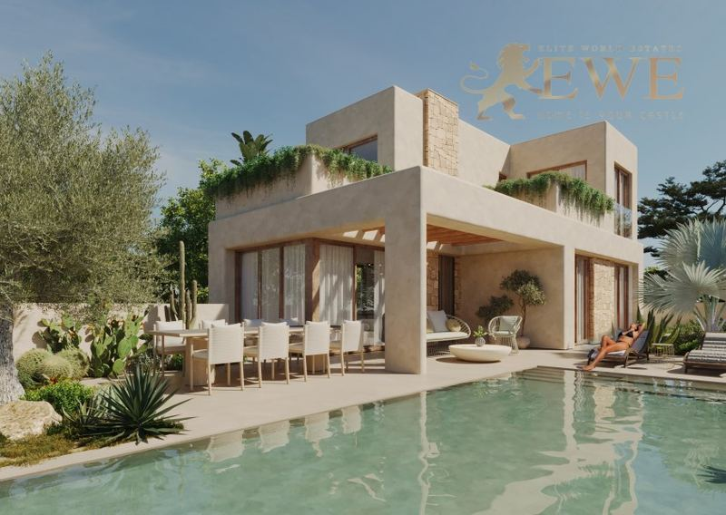
Finestrat
Luxury vila in Sierra Cortina, Finestrat
765.000 €
4 dormitorios · 3 baños · 115 m²Ref. EWE3614

Finestrat
Modern villa with panoramic sea views in Balcón de Finestrat
770.000 €
3 dormitorios · 3 baños · 125 m²Ref. EWE3144
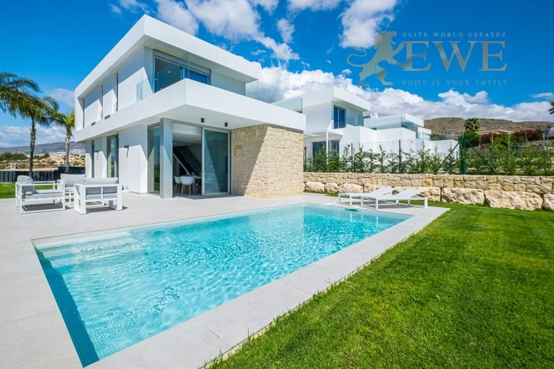
Finestrat
Elite sea view villa in the prestigious Sierra Cortina Resort location in Finestrat
795.000 €
3 dormitorios · 3 baños · 130 m²Ref. EWE2288
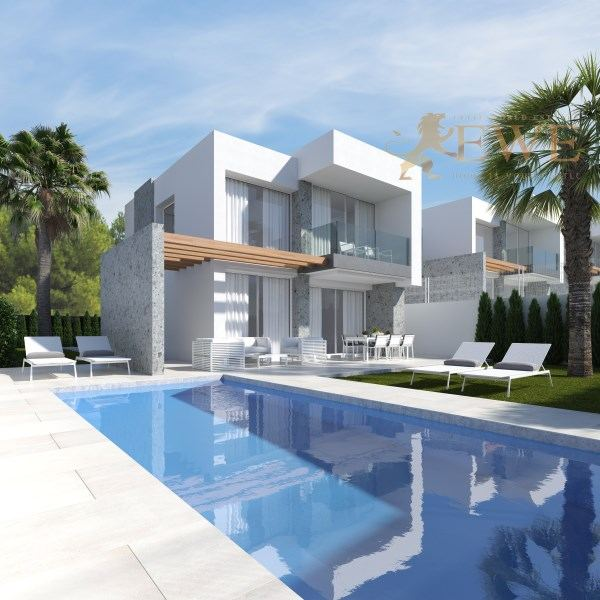
Finestrat
Private luxury villas in prestigious Sierra Cortina, Finestart
870.000 €
3 dormitorios · 3 baños · 130 m²Ref. EWE1796
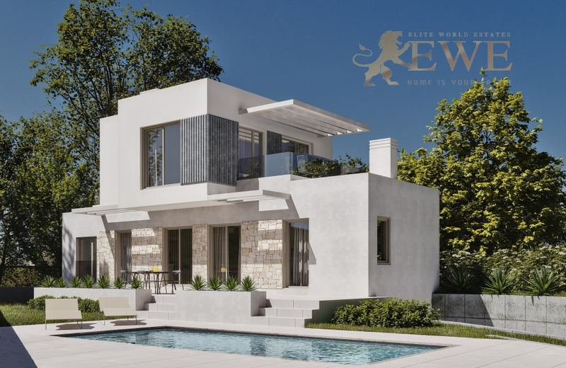
Finestrat
Elite villa with flawless sea views in Finestrat
895.000 €
3 dormitorios · 4 baños · 204 m²Ref. EWE1984
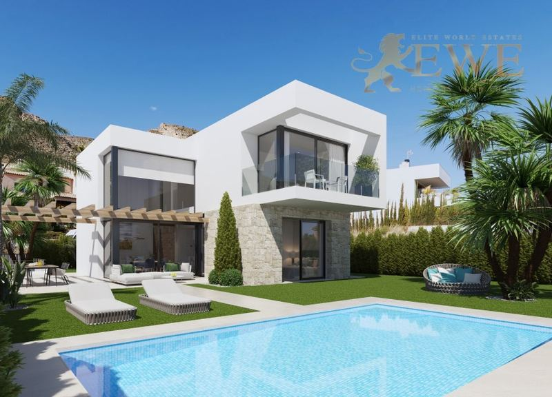
Finestrat
Stunning villa with sea views in Finestrat
915.000 €
3 dormitorios · 3 baños · 148 m²Ref. EWE1811

Finestrat
Exclusive villa with pool in Finestrat
985.000 €
3 dormitorios · 4 baños · 175 m²Ref. EWE2132
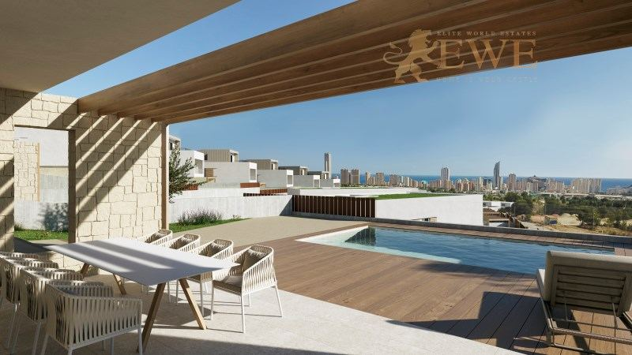
Finestrat
Luxury villa with sea views in Finestrat
1.150.000 €
4 dormitorios · 4 baños · 315.66 m²Ref. EWE2417

Finestrat
Stunning villa in Finestrat
1.195.000 €
3 dormitorios · 4 baños · 155 m²Ref. EWE1810

Finestrat
Luxury villa with sea view in Finestrat
1.200.000 €
3 dormitorios · 3 baños · 210 m²Ref. EWE3330

Finestrat
Stylish villa with infinity pool and sea views in Finestrat
1.400.000 €
4 dormitorios · 5 baños · 344 m²Ref. EWE1886

Finestrat
Luxury villa with sea views in Sierra Cortina, Finestrat
2.450.000 €
5 dormitorios · 6 baños · 335 m²Ref. EWE1936

Finestrat
Magnificent Luxury Villa in Sierra Cortina, Finestrat
3.950.000 €
7 dormitorios · 7 baños · 999 m²Ref. EWE2027
La ciudad
Vivir en Finestrat
Finestrat es un municipio en las colinas justo detrás de Benidorm, que va desde el Puig Campana hasta un pequeño tramo de costa en La Cala. El pueblo antiguo se asienta sobre un cerro rocoso, con casas blancas, una iglesia y un mirador sobre toda la bahía.
La mayoría de las viviendas nuevas se construyen entre el pueblo antiguo y Benidorm, en zonas residenciales como Sierra Cortina y Balcón de Finestrat. Desde aquí se ven el mar y las torres de Benidorm, y las playas de Benidorm y La Cala están a unos 10 minutos en coche.
El día a día es fácil: grandes centros comerciales, supermercados, parques temáticos y campos de golf están muy cerca, y la autopista AP-7 pasa al lado. El aeropuerto de Alicante-Elche está a unos 45 minutos en coche. Para muchos compradores, Finestrat ofrece más espacio y más tranquilidad que Benidorm, con las mismas vistas.
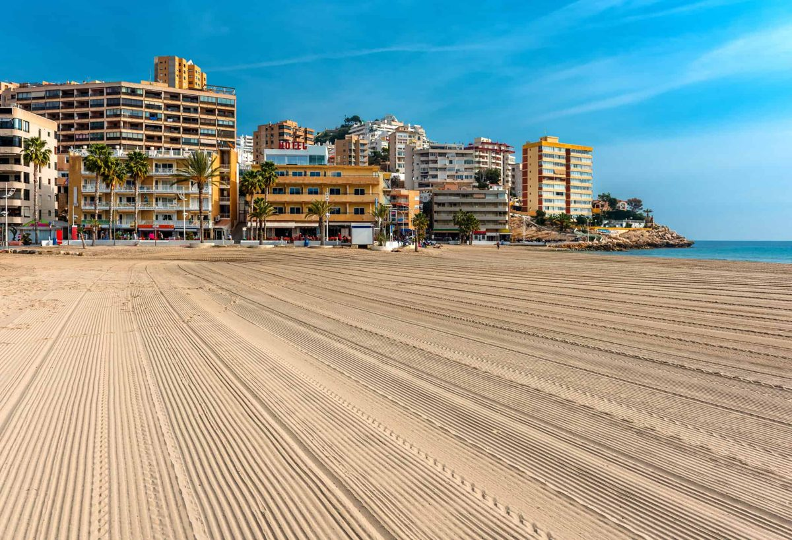
Dónde comprar
Las principales zonas de Finestrat
Sierra Cortina
Un residencial cerrado en las colinas sobre Benidorm, con jardines, piscinas y seguridad. Pisos nuevos y villas modernas con vistas al mar.
Balcón de Finestrat
Una ladera con amplias vistas a la bahía y al skyline de Benidorm. Villas y pisos, muchos en promociones nuevas.
Pueblo antiguo
Casas blancas sobre un cerro rocoso bajo el Puig Campana, con iglesia, plazuelas y mirador. Casas de pueblo, pocas en venta.
La Cala de Finestrat
La pequeña zona de playa en la costa, junto a la playa de Poniente de Benidorm. Pisos cerca del mar, con tiendas y restaurantes.
Junto a Benidorm
Las zonas más nuevas y cercanas a Benidorm, junto a los centros comerciales y los parques temáticos. Residenciales modernos con piscina.
Faldas del Puig Campana
Las laderas verdes bajo la montaña, hacia el interior desde el pueblo antiguo. Villas con parcelas grandes y vistas a la montaña y al mar.
Presupuesto
Cuánto cuesta comprar en Finestrat
Al precio se suman impuestos y gastos. Para un piso nuevo de 409.000 €, por ejemplo, son 40.900 € de IVA y 5.726 € de AJD, más notaría, registro y abogado. En la segunda mano los impuestos son otros, así que pídanos siempre la cifra exacta de la vivienda que le guste.
| Obra nueva | 10 % IVA + 1,4 % AJD |
|---|---|
| Segunda mano | 9 % ITP, 11 % por encima de 1 millón de € |
| Notaría, registro, abogado | aprox. 1,5–2,5 % del precio |
| Cada año | IBI y gastos de comunidad, según la vivienda |
Preguntas
Comprar vivienda en Finestrat: preguntas y respuestas
¿Cuánto cuesta una vivienda en Finestrat?
Nuestros pisos nuevos en Finestrat empiezan hoy en 289.000 €, y la mayoría de 2 o 3 dormitorios cuestan entre 310.000 € y 550.000 €. Los adosados cuestan desde unos 425.000 €, y las villas con piscina privada desde unos 555.000 €, hasta 2,45 millones de € por una gran villa en Sierra Cortina.
¿Está Finestrat cerca de la playa?
Finestrat tiene su propio tramo de costa en La Cala, y las playas de Benidorm están a unos 10 minutos en coche desde la mayoría de las zonas. Muchas viviendas tienen vistas al mar desde las colinas.
Finestrat o Benidorm: ¿qué es mejor?
Benidorm encaja con quien quiere vivir junto a la playa, en una torre y con todo a pie. Finestrat, con quien quiere más espacio, jardín o piscina privada y un entorno más tranquilo, con las mismas vistas y Benidorm muy cerca.
¿A qué distancia está Finestrat del aeropuerto?
El aeropuerto Alicante-Elche Miguel Hernández está a unos 45 minutos en coche por la autopista AP-7.
¿Qué gastos hay además del precio?
En obra nueva se paga un 10 % de IVA y un 1,4 % de AJD. En segunda mano se paga un 9 % de ITP (11 % por encima de 1 millón de €). Notaría, registro y abogado suman alrededor de un 1,5–2,5 %.
¿Pueden comprar vivienda los extranjeros en Finestrat?
Sí. Cualquier persona puede comprar una vivienda en España. Necesita un NIE y normalmente una cuenta bancaria española, y le ayudamos con las dos cosas. Consulte nuestra guía del NIE.


¿Busca casa en Finestrat?
Cuéntenos su presupuesto y lo que necesita. Respondemos en un día laborable, en español, inglés, alemán o polaco.